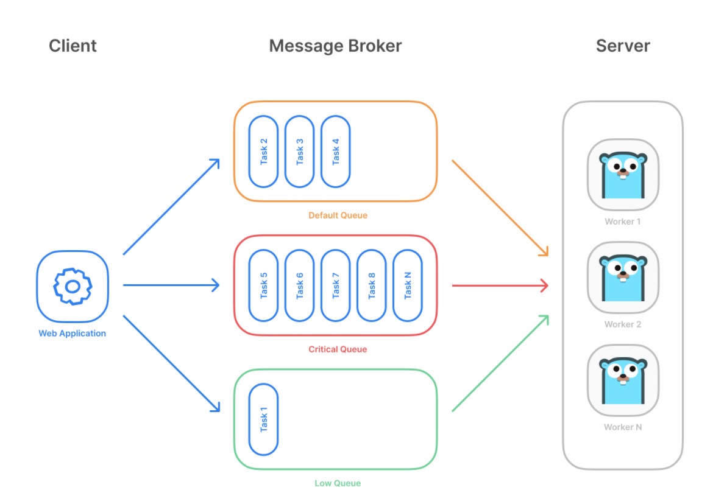
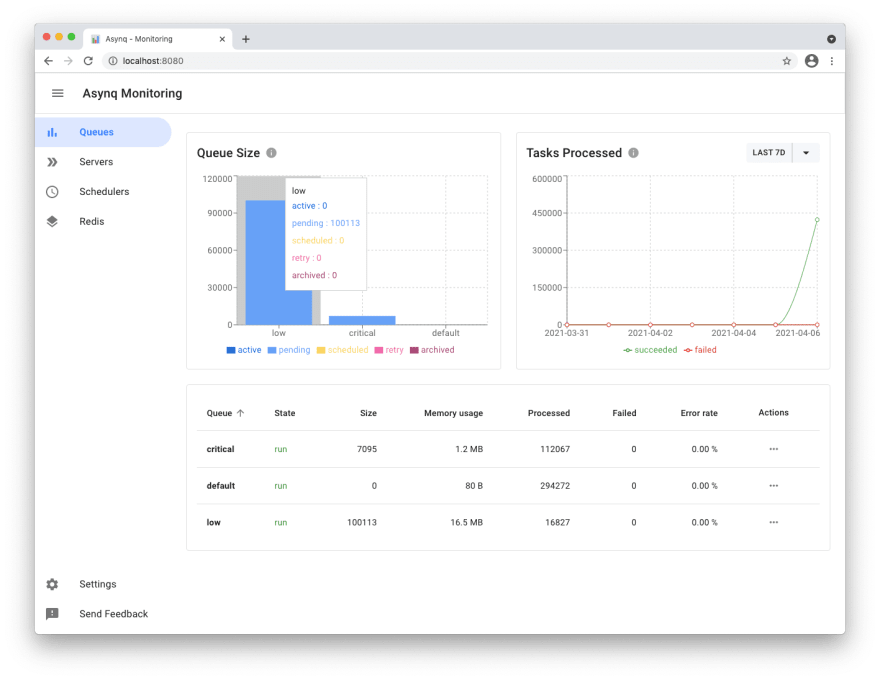
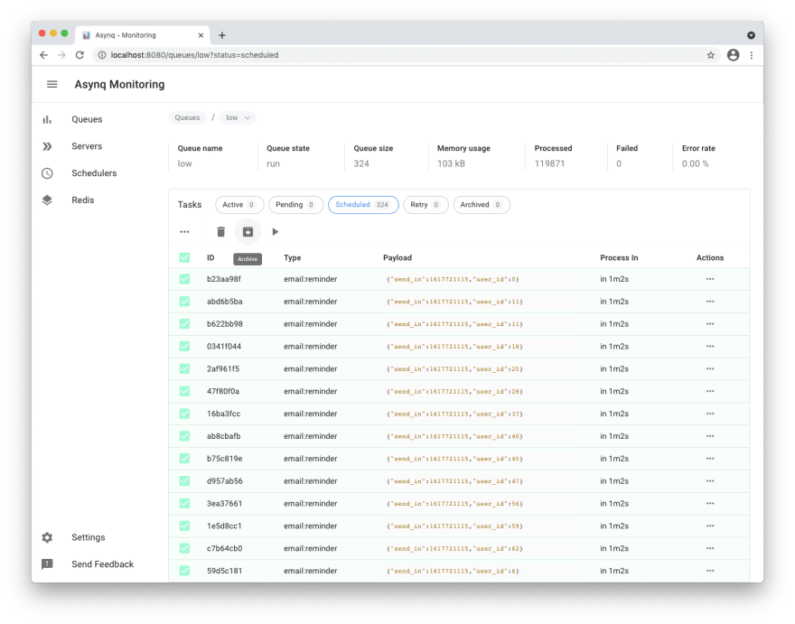
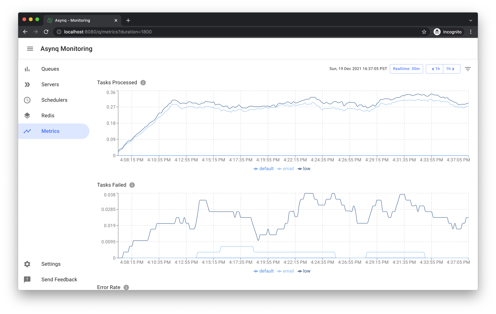

一个实用的分布式Go任务处理库
在微服务中,如果你需要一个分布式的任务管理库,那么asynq将是首选. 它基于redis,所以就算是你有多个任务的分发以及消费节点,也不用担心节点协调问题.因为redis集群自己会同步数据.
架构

asynq 围绕着redis展开,这是他的单一中心. 而相关的client以及message broker可以有多个. asynq支持重要特新:
- 保证一个任务至少被执行一次
- 有重试机制
- 有简单的优先级队列
- 同时有一个asynqmon的管理界面
一分钟上手
这里采用的是一个官方的例子.
task
package tasks
import (
"context"
"encoding/json"
"fmt"
"log"
"time"
"github.com/hibiken/asynq"
)
// A list of task types.
const (
TypeEmailDelivery = "email:deliver"
TypeImageResize = "image:resize"
)
type EmailDeliveryPayload struct {
UserID int
TemplateID string
}
type ImageResizePayload struct {
SourceURL string
}
//----------------------------------------------
// Write a function NewXXXTask to create a task.
// A task consists of a type and a payload.
//----------------------------------------------
func NewEmailDeliveryTask(userID int, tmplID string) (*asynq.Task, error) {
payload, err := json.Marshal(EmailDeliveryPayload{UserID: userID, TemplateID: tmplID})
if err != nil {
return nil, err
}
return asynq.NewTask(TypeEmailDelivery, payload), nil
}
func NewImageResizeTask(src string) (*asynq.Task, error) {
payload, err := json.Marshal(ImageResizePayload{SourceURL: src})
if err != nil {
return nil, err
}
// task options can be passed to NewTask, which can be overridden at enqueue time.
return asynq.NewTask(TypeImageResize, payload, asynq.MaxRetry(5), asynq.Timeout(20 * time.Minute)), nil
}
//---------------------------------------------------------------
// Write a function HandleXXXTask to handle the input task.
// Note that it satisfies the asynq.HandlerFunc interface.
//
// Handler doesn't need to be a function. You can define a type
// that satisfies asynq.Handler interface. See examples below.
//---------------------------------------------------------------
func HandleEmailDeliveryTask(ctx context.Context, t *asynq.Task) error {
var p EmailDeliveryPayload
if err := json.Unmarshal(t.Payload(), &p); err != nil {
return fmt.Errorf("json.Unmarshal failed: %v: %w", err, asynq.SkipRetry)
}
log.Printf("Sending Email to User: user_id=%d, template_id=%s", p.UserID, p.TemplateID)
// Email delivery code ...
return nil
}
// ImageProcessor implements asynq.Handler interface.
type ImageProcessor struct {
// ... fields for struct
}
func (processor *ImageProcessor) ProcessTask(ctx context.Context, t *asynq.Task) error {
var p ImageResizePayload
if err := json.Unmarshal(t.Payload(), &p); err != nil {
return fmt.Errorf("json.Unmarshal failed: %v: %w", err, asynq.SkipRetry)
}
log.Printf("Resizing image: src=%s", p.SourceURL)
// Image resizing code ...
return nil
}
func NewImageProcessor() *ImageProcessor {
return &ImageProcessor{}
}
2
3
4
5
6
7
8
9
10
11
12
13
14
15
16
17
18
19
20
21
22
23
24
25
26
27
28
29
30
31
32
33
34
35
36
37
38
39
40
41
42
43
44
45
46
47
48
49
50
51
52
53
54
55
56
57
58
59
60
61
62
63
64
65
66
67
68
69
70
71
72
73
74
75
76
77
78
79
80
81
82
83
84
这是client/server 共同知晓的任务的数据结构.
client
client 其实是task的生产者,将任务放入队列. 相关的server会自动进行消费.
package main
import (
"log"
"time"
"github.com/hibiken/asynq"
"your/app/package/tasks"
)
const redisAddr = "127.0.0.1:6379"
func main() {
client := asynq.NewClient(asynq.RedisClientOpt{Addr: redisAddr})
defer client.Close()
// ------------------------------------------------------
// Example 1: Enqueue task to be processed immediately.
// Use (*Client).Enqueue method.
// ------------------------------------------------------
task, err := tasks.NewEmailDeliveryTask(42, "some:template:id")
if err != nil {
log.Fatalf("could not create task: %v", err)
}
info, err := client.Enqueue(task)
if err != nil {
log.Fatalf("could not enqueue task: %v", err)
}
log.Printf("enqueued task: id=%s queue=%s", info.ID, info.Queue)
// ------------------------------------------------------------
// Example 2: Schedule task to be processed in the future.
// Use ProcessIn or ProcessAt option.
// ------------------------------------------------------------
info, err = client.Enqueue(task, asynq.ProcessIn(24*time.Hour))
if err != nil {
log.Fatalf("could not schedule task: %v", err)
}
log.Printf("enqueued task: id=%s queue=%s", info.ID, info.Queue)
// ----------------------------------------------------------------------------
// Example 3: Set other options to tune task processing behavior.
// Options include MaxRetry, Queue, Timeout, Deadline, Unique etc.
// ----------------------------------------------------------------------------
task, err = tasks.NewImageResizeTask("https://example.com/myassets/image.jpg")
if err != nil {
log.Fatalf("could not create task: %v", err)
}
info, err = client.Enqueue(task, asynq.MaxRetry(10), asynq.Timeout(3 * time.Minute))
if err != nil {
log.Fatalf("could not enqueue task: %v", err)
}
log.Printf("enqueued task: id=%s queue=%s", info.ID, info.Queue)
}
2
3
4
5
6
7
8
9
10
11
12
13
14
15
16
17
18
19
20
21
22
23
24
25
26
27
28
29
30
31
32
33
34
35
36
37
38
39
40
41
42
43
44
45
46
47
48
49
50
51
52
53
54
55
56
57
58
59
server
server 是task的消费者,它一直运行在后台. 可以有多个client,多个server,只要他们连接到了同一个redis server(集群也可以的)即可.
package main
import (
"log"
"github.com/hibiken/asynq"
"your/app/package/tasks"
)
const redisAddr = "127.0.0.1:6379"
func main() {
srv := asynq.NewServer(
asynq.RedisClientOpt{Addr: redisAddr},
asynq.Config{
// Specify how many concurrent workers to use
Concurrency: 10,
// Optionally specify multiple queues with different priority.
Queues: map[string]int{
"critical": 6,
"default": 3,
"low": 1,
},
// See the godoc for other configuration options
},
)
// mux maps a type to a handler
mux := asynq.NewServeMux()
mux.HandleFunc(tasks.TypeEmailDelivery, tasks.HandleEmailDeliveryTask)
mux.Handle(tasks.TypeImageResize, tasks.NewImageProcessor())
// ...register other handlers...
if err := srv.Run(mux); err != nil {
log.Fatalf("could not run server: %v", err)
}
}
2
3
4
5
6
7
8
9
10
11
12
13
14
15
16
17
18
19
20
21
22
23
24
25
26
27
28
29
30
31
32
33
34
35
36
37
asynqmon
这是一个管理界面,可以直观的查看各个队列的情况,可以手工取消,删除,重新执行task.
Queues

tasks

metrics

简单代码阅读
asynq 实际上是围绕redis展开, 由于其数据结构复杂,所以里面大量使用了lua脚本来保证操作的原子性. redis可以认为是asynq的高性能数据库, asynq client和server的数据都取自这里.
task主要以下状态:
- Pending 创建的任务,都处于此状态
- Active server可以执行的时候,会将任务转换为active,然后开始执行
- Scheduled 如果一个任务不能立即执行,会进入到Scheduled状态,等待时机到来的时候再执行.
- retry 任务执行失败后,会再次尝试,这时候就会进入retry的状态,
- archived状态 失败次数达到上线,或者超过了规定的时限了,就会进入该状态,一直持续下去,需要人手工删除.
任务的状态迁移
这主要涉及到asynq server的内部组件,下面一一介绍,他们在执行和管理任务.
healthchecker
这个非常简单,不断的ping redis,告诉自己还活着
heartbeater
对应的是asynqmon中的/asynqmon/servers,主要是不停的将server的状态更新到redis中,方便asynqmon 查看.
inspector
这个是asynqmon管理的入口,可以查看所有的server以及管理任务.
processor
这个是执行任务的组件,不停的将处于Pending中的任务,从队列中取出来,然后执行. 主要是解决:
- 如果任务失败了,则将任务改为retry或者archived状态,主要是看是否还有尝试次数.
- 如果收到了server退出的信号,则将正在执行的任务重新设置为pending,然后再结束.
- 开始执行任务之前,会将任务放入一个
Cancelations的数据结构中,方便另一个组件subscriber处理.
scheduler
Scheduler是一个相对独立的组件,主要是定期产生task,可以认为是client的高级版本.
recoverer
这个组件负责重试执行失败的task,如果还有可以用的尝试次数就重试执行,重试执行就是将任务状态由retry改为pending. 还有一种特殊情况就是就是任务处于active状态,但是相关的server已经挂了,这导致recover发现,也会取出来重新执行.
subscriber
这个组件主要功能是响应asynqmon取消任务的命令,它内部使用redis的PUBSUB机制,监听来自inspector的取消命令,收到后,会将指定的任务取消执行.
syncer
syncer是processor的辅助组件,processor对于任务状态的所有改变,都是在syncer中执行. 如果状态改变失败,会尝试重新执行.
常见问题
1. 任务至少会执行一次,是否可能重复执行?
有可能的,有一种场景,比如asynq在收到退出信号时,会把正在执行的任务重新放回去,这时候如果某个任务碰巧结束了,这就会造成这个任务虽然成功了,但是重复执行. 当然如果一个任务执行到一半,进程退出了,下次启动以后,还会接着重新执行.